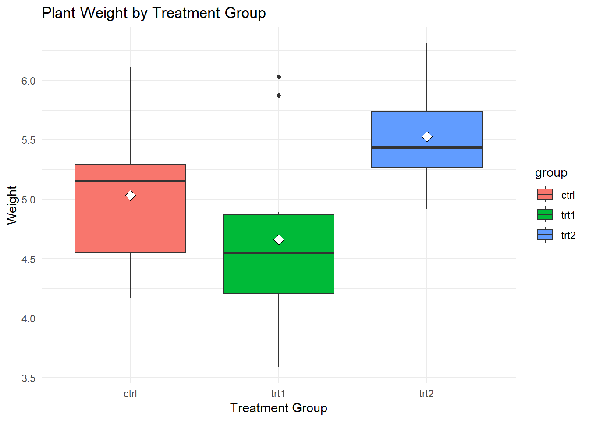
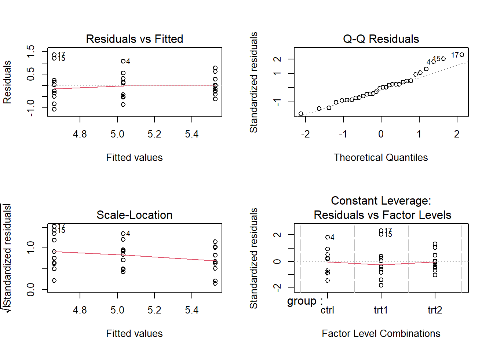

It is very important to know how different groups compare and how factors affect each other when you are doing data analysis. One of the most important statistical methods we can use to test these differences and interactions is Analysis of Variance (ANOVA). This post will explain what ANOVA and Linear Models are and how to use them in R. You will also get to use real datasets to practice.
Who Should Read This:
This blog post is for people who are new to or already know a little about R and want to learn how to do and understand ANOVA and Linear Models. This guide will give you useful skills to improve your data analysis skills, no matter if you are a student, researcher, or data scientist.
A Brief Look at ANOVA
What is the ANOVA?
One way to use statistics is to compare the means of three or more groups and see if at least one of them is significantly different from the others. This is called analysis of variance (ANOVA). A lot of people use it in business, biology, and the social sciences.
Types of ANOVA:
With one-way ANOVA, you can see if there are any differences in the means of three or more groups that are not linked to each other.
Two-Way ANOVA looks at how two independent factors affect a dependent variable, taking into account the effects that happen when the variables interact.
Measurements Taken More Than Once ANOVA is used to compare two or more sets of data from the same subject in different ways.
Multiple dependent variables can be used in multivariate ANOVA (MANOVA), which lets you test the effects on a single result.
ANOVA: Why Use It?
When you want to find out if different conditions, treatments, or interventions lead to different results, ANOVA is very helpful. It gives a statistical way to figure out if changes in data are caused by real effects or by random variation.
One-way ANOVA
The One-Way ANOVA checks if there are statistically significant changes between the means of three or more separate groups that are not related to each other.
Structure:
You can think of an independent variable as a category variable with two or more levels, like Fertilizer A, B, and C.
Dependent Variable: An result variable that changes over time, like plant growth or test scores.
Let’s say you want to see how three different fertilizers (Fertilizer A, B, and C) affect plant growth (in centimeters). ANOVA helps you figure out if these fertilizers make a big difference in the growth.
Important Points:
The null hypothesis (H₀) says that all group means are the same.
The other idea is that the mean of at least one group is not the same.
We reject the null hypothesis if the p-value is less than the significance level, which is usually 0.05. This means that there is a significant difference between the groups.
What ANOVA Is Based On (Basic Assumptions)
Some conditions must be met before ANOVA can be performed:
Random and Unrelated Observations: The data should come from groups that were chosen at random and are unrelated to each other.
Normality: The data in each group should be spread out in a way that is similar to the normal distribution. This assumption is not as important if you have a large sample size.
The differences between the groups should be about the same. This is called homogeneity of variation.
Note: The assumptions of normality and homogeneity of variance can be loosened (made lenient) a bit when sample size is big.
ANOVA Example Case Study
Let’s use the PlantGrowth dataset to show an example. This dataset has data on how plants grew in different treatment groups. We want to know if the plant growth in these groups is very different from that in the other groups.
# Load the tidyverse packagelibrary(tidyverse)
── Attaching core tidyverse packages ──────────────────────── tidyverse 2.0.0 ──
✔ dplyr 1.1.2 ✔ readr 2.1.5
✔ forcats 1.0.0 ✔ stringr 1.5.1
✔ ggplot2 3.5.1 ✔ tibble 3.2.1
✔ lubridate 1.9.3 ✔ tidyr 1.3.0
✔ purrr 1.0.2
── Conflicts ────────────────────────────────────────── tidyverse_conflicts() ──
✖ dplyr::filter() masks stats::filter()
✖ dplyr::lag() masks stats::lag()
ℹ Use the conflicted package (<http://conflicted.r-lib.org/>) to force all conflicts to become errors
# Load the PlantGrowth datasetdata("PlantGrowth")# View the first few rows of the datasethead(PlantGrowth)
First, we load the tidyverse package, which has tools for working with and showing data. Next, we load the PlantGrowth dataset to start looking into it.
Data Exploration
# Summary statistics for the datasetsummary(PlantGrowth)
weight group
Min. :3.590 ctrl:10
1st Qu.:4.550 trt1:10
Median :5.155 trt2:10
Mean :5.073
3rd Qu.:5.530
Max. :6.310
# Check the structure of the datasetstr(PlantGrowth)
# Count the number of observations in each groupPlantGrowth %>%group_by(group) %>%summarise(count =n())
# A tibble: 3 × 2
group count
<fct> <int>
1 ctrl 10
2 trt1 10
3 trt2 10
To get a sense of the whole dataset, we use simple methods like summary() and str(). Sorting the data by treatment group helps us see how it is spread out across the different groups.
Visualization
# Boxplot of plant weight by groupPlantGrowth %>%ggplot(aes(x = group, y = weight, fill = group)) +geom_boxplot() +stat_summary(fun = mean,geom ="point",shape =23,size =3,color ="black",fill ="white" ) +labs(title ="Plant Weight by Treatment Group",x ="Treatment Group",y ="Weight") +theme_minimal()

This boxplot shows how the plant weights changed in the different treatment groups. Find places where the boxes meet or clear gaps between them to see how the groups compare.
Testing Assumptions
Equality of Variances
# Bartlet Test of homogeneity of variancesbartlett.test(weight ~ group, data = PlantGrowth)
Bartlett test of homogeneity of variances
data: weight by group
Bartlett's K-squared = 2.8786, df = 2, p-value = 0.2371
The Bartlett test checks to see if the differences between groups are the same. If the p-value is not significant, it means that the assumption of homogeneity of differences is true.
Normality of the Data
# Shapiro-Wilk test for each groupby(PlantGrowth$weight, PlantGrowth$group, shapiro.test)
PlantGrowth$group: ctrl
Shapiro-Wilk normality test
data: dd[x, ]
W = 0.95668, p-value = 0.7475
------------------------------------------------------------
PlantGrowth$group: trt1
Shapiro-Wilk normality test
data: dd[x, ]
W = 0.93041, p-value = 0.4519
------------------------------------------------------------
PlantGrowth$group: trt2
Shapiro-Wilk normality test
data: dd[x, ]
W = 0.94101, p-value = 0.5643
To see if the data in each group is normal, the Shapiro-Wilk test is used. If the p-value is more than 0.05, it means that the data is probably pretty normal.
ANOVA in R
# Perform ANOVAanova_result <-aov(weight ~ group, data = PlantGrowth)# Display the ANOVA tablesummary(anova_result)
Df Sum Sq Mean Sq F value Pr(>F)
group 2 3.766 1.8832 4.846 0.0159 *
Residuals 27 10.492 0.3886
---
Signif. codes: 0 '***' 0.001 '**' 0.01 '*' 0.05 '.' 0.1 ' ' 1
There is an ANOVA table that shows the F-statistic and the p-value. If the p-value is less than 0.05, it means that there is a substantial distinction in the plant weights between the treatment groups.
Tukey multiple comparisons of means
95% family-wise confidence level
Fit: aov(formula = weight ~ group, data = PlantGrowth)
$group
diff lwr upr p adj
trt1-ctrl -0.371 -1.0622161 0.3202161 0.3908711
trt2-ctrl 0.494 -0.1972161 1.1852161 0.1979960
trt2-trt1 0.865 0.1737839 1.5562161 0.0120064
Visualization
# Visualize Tukey's HSD resultsplot(tukey_result)
If the ANOVA shows that there are significant differences, Tukey’s HSD test helps figure out which groups are different. The plot shows these similarities graphically by showing which pairs of groups are very different from each other.
ANOVA vs. Linear Modeling
ANOVA
Purpose: Compares group means to test if there are significant differences.
Limitations: Focuses only on categorical independent variables.
Linear Modeling
Purpose: Examines the relationship between the dependent variable and multiple predictors (both categorical and continuous).
Advantages: Provides detailed estimates of the effects and allows for more flexibility in analysis.
Side-by-Side Comparison
Aspect
ANOVA
Linear Modeling
Question
Are the group means different?
How does the outcome change with each predictor?
Variables
Categorical independent variables only
Both categorical and continuous predictors
Output
F-statistic, p-value
Coefficients, p-values, R²
Analysis with Linear Modeling
# Fit a linear modellm_result <-lm(weight ~ group, data = PlantGrowth)# Display the summary of the linear modelsummary(lm_result)
Call:
lm(formula = weight ~ group, data = PlantGrowth)
Residuals:
Min 1Q Median 3Q Max
-1.0710 -0.4180 -0.0060 0.2627 1.3690
Coefficients:
Estimate Std. Error t value Pr(>|t|)
(Intercept) 5.0320 0.1971 25.527 <2e-16 ***
grouptrt1 -0.3710 0.2788 -1.331 0.1944
grouptrt2 0.4940 0.2788 1.772 0.0877 .
---
Signif. codes: 0 '***' 0.001 '**' 0.01 '*' 0.05 '.' 0.1 ' ' 1
Residual standard error: 0.6234 on 27 degrees of freedom
Multiple R-squared: 0.2641, Adjusted R-squared: 0.2096
F-statistic: 4.846 on 2 and 27 DF, p-value: 0.01591
The linear model gives you factors that show how each treatment group changed the plant weight, along with p-values that you can use to see how important these changes are.
Diagnostic Plots
# Diagnostic plots for the linear modelpar(mfrow =c(2, 2)) # Arrange plots in a 2x2 gridplot(lm_result)

You can use diagnostic plots to make sure that the linear model’s assumptions are met, like that the residuals are normal and that the model is linear. You might not be able to trust the model’s results if these assumptions are voilated.
Conclusion
ANOVA helps determine if there are significant differences between group means.
Linear Modeling provides more flexibility and detailed information about the relationships between variables.
Use your own samples to test these methods. Try these statistical methods out in different situations and see how they can help you find insights in your data.
Resources & References:
Davies, T. M. (2016). The Book of R: A First Course in Programming and Statistics. San Francisco: No Starch Press.
R for Data Science - Comprehensive guide to using R for data analysis.
Statistics with R Specialization - Coursera course for learning statistics using R. External Link
Have questions or feedback? Leave a comment below or reach out to us on social media. We’re here to help you on your data analysis journey!